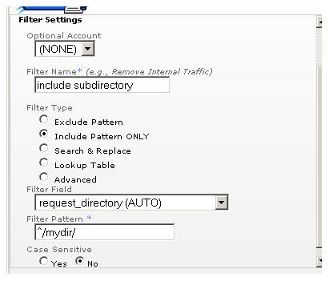

Filtri di esclusione e inclusione
Introduzione
I filtri di esclusione e inclusione, impostati nell'interfaccia di amministrazione e applicati a una sorgente log o profilo, hanno la funzione di eliminare gli hit indesiderati nell'elaborazione di un file di log. I filtri utilizzano espressioni regolari POSIX quando ricercano le corrispondenze rispetto ai dati nei campi di un hit. Se non hai dimestichezza con le espressioni regolari, consulta il documento Panoramica sulle espressioni regolari in questa sezione prima di procedere.
In che modo Urchin utilizza i filtri di esclusione e inclusione
Questi filtri vengono applicati dopo i filtri Cerca e sostituisci, Tabella di ricerca e Avanzato. Urchin applica i filtri di esclusione e inclusione in sequenza. Se il filtro applicato al momento è di esclusione e il pattern corrisponde, l'hit viene ignorato e Urchin prosegue con l'hit successivo. Se il pattern non corrisponde, Urchin applica il filtro successivo all'hit. Ciò significa che puoi creare un solo filtro di esclusione con più pattern separati da '|' oppure puoi creare più filtri di esclusione con un solo pattern ciascuno.
Per i filtri di inclusione la logica adottata è inversa. Quando viene applicato un filtro di inclusione, l'occorrenza viene ignorata se il pattern non corrisponde ai dati. Se vengono applicati più filtri di inclusione, per essere salvato l'hit deve corrispondere a ciascun filtro di inclusione applicato. Per includere più pattern per un campo specifico, crea un solo filtro di inclusione contenente tutte le singole espressioni separate da '|'.
Utilizzo dei filtri di esclusione e inclusione

Nella figura precedente, il filtro di esclusione richiede un'espressione filtro e un campo filtro. Durante l'elaborazione, l'espressione filtro viene confrontata con i dati del campo filtro e l'hit viene ignorato in caso di corrispondenza del filtro. Consulta l'articolo sui campi filtro per conoscere l'elenco completo dei campi disponibili. L'esempio presentato sopra illustra come filtrare gli hit di immagini escludendo tutti i tipi Mime che corrispondono a gif, jpg, png, jpeg e ico. L'elenco può essere personalizzato per corrispondere a qualsiasi tipo Mime.

Nella figura precedente, il filtro di inclusione richiede un'espressione filtro e un campo filtro. Durante l'elaborazione, l'espressione filtro viene confrontata con i dati del campo filtro e l'hit viene ignorato in caso di mancata corrispondenza del filtro. Consulta l'articolo 'Quali informazioni rappresentano i campi filtro?' per conoscere l'elenco completo dei campi disponibili. Questo esempio mostra come filtrare solo gli hit richiedendo la sottocartella mydir della richiesta.
Comandi
Il comando 'Distinzione tra maiuscole e minuscole' ti consente di specificare se il filtro deve essere applicato attuando questa distinzione oppure no.